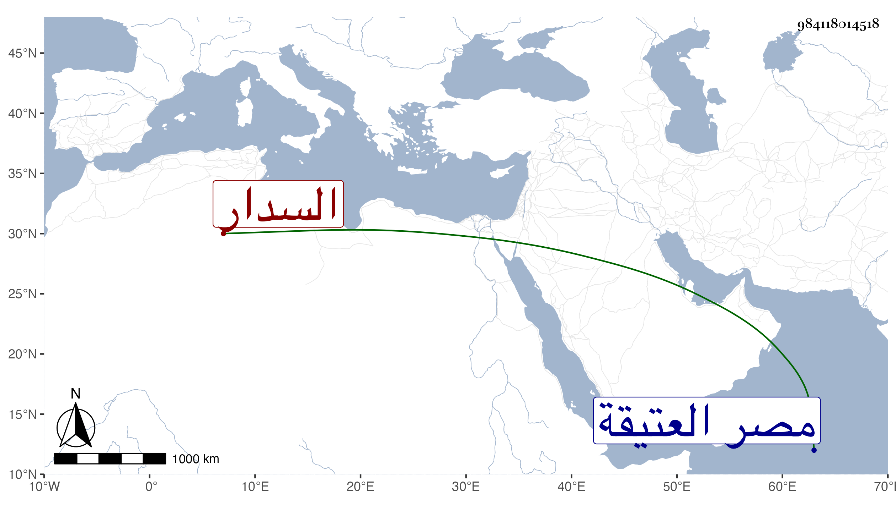

0902Sakhawi.DawLamic.ITO20230111-ara1.EIS1600.984118014518
Biography ID: 984118014518
487
محمد السدار شيخ معتقد تذكر له أحوال وكرامات إلى المجاذيب أقرب مقيم يزاوية جددتها أو أنشأتها له خوند في مصر العتيقة . مات وقد قارب السبعين فيما قيل في ليلة الخميس منتصف جمادى الثانية سنة تسع وثمانين وصلى عليه من الغد بجامع عمرو في جمع جم فيه غير واحد من أتباع السلطان وراموا دفنه بتربته فما أمكن فرجعوا به لزاويته رحمه الله وإيانا ونفعنا به .
